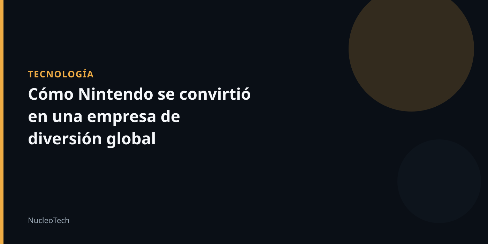

Nintendo, una empresa que se salió de lo común
La empresa que nos conocemos hoy como Nintendo, con sus innovadoras consolas de videojuegos y personajes icónicos, tiene una historia que sorprende. En sus inicios, Nintendo no era una empresa de entretenimiento, sino una empresa que vendía arroz instantáneo y buscaba negocio en todo lo que no fuera videojuegos. ¿Cómo se convirtió en la empresa que conocemos hoy?
Para entender cómo Nintendo se convirtió en la empresa de diversión global que es hoy, debemos ir a la década de 1950. En ese momento, Nintendo estaba en una etapa de crecimiento y estaba buscando nuevas vías de negocio. En 1959, la empresa lanzó cartas con personajes de Disney, lo que le permitió abrirse a un público más amplio, especialmente familias y niños. El éxito de estas cartas fue enorme, y la empresa se convirtió en una de las más exitosas de Japón.
Sin embargo, Hiroshi Yamauchi, el hombre detrás de Nintendo, no se contentó con el éxito. Estaba buscando nuevas formas de crecimiento y nuevas oportunidades. En ese momento, la empresa estaba en una etapa de expansión y estaba buscando formas de aumentar sus ingresos. La búsqueda de Yamauchi explica algunos de los movimientos empresariales más sorprendentes de la historia de Nintendo.
Una de las decisiones más sorprendentes de Yamauchi fue la entrada de Nintendo en la industria de los videojuegos. En ese momento, la empresa estaba en una etapa de transición y estaba buscando formas de adaptarse a los cambios en el mercado. La entrada de Nintendo en la industria de los videojuegos fue un paso audaz, pero que se convirtió en un éxito. La empresa desarrolló consolas de videojuegos innovadoras y creó personajes icónicos que se convirtieron en parte de la cultura popular.
La historia de Nintendo es un ejemplo de cómo una empresa puede cambiar y crecer en diferentes momentos. La empresa se salió de lo común y se convirtió en una de las más exitosas del mundo. La historia de Nintendo es un recordatorio de que la innovación y la creatividad son clave para el éxito en cualquier industria.
En resumen, la historia de Nintendo es una historia de innovación y creatividad. La empresa se salió de lo común y se convirtió en una de las más exitosas del mundo. La historia de Nintendo es un recordatorio de que la innovación y la creatividad son clave para el éxito en cualquier industria.
Conclusión
La historia de Nintendo es un ejemplo de cómo una empresa puede cambiar y crecer en diferentes momentos. La empresa se salió de lo común y se convirtió en una de las más exitosas del mundo. La historia de Nintendo es un recordatorio de que la innovación y la creatividad son clave para el éxito en cualquier industria.